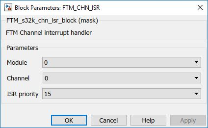

FTM Channel ISR Block
The main functionality of the block is to generate a function call if an event occurs on the selected module/channel.
Block Image

Inputs:
- None
Outputs:
- Function-call
Parameters and Dialog Box
Module
Select which FTM module to use.
- Range: 0 – FTMn
Channel
Channel selection
- Range: 0 – 7
ISR Priority
Interrupt priority level. A lower priority value indicates a higher ISR priority
- 0 – 3 - S32K11x
- 0 – 15 - S32K14x
Block Dependency
Any of the block that configures a FTM module and triggers interrupts on Chnannel.
Block Miscellaneous Details
Channel(2n) and Channel(2n+1) with n=0..FTMn are using the same interrupt source. For more details refer to FTM Interrupts chapter in the Reference Manual